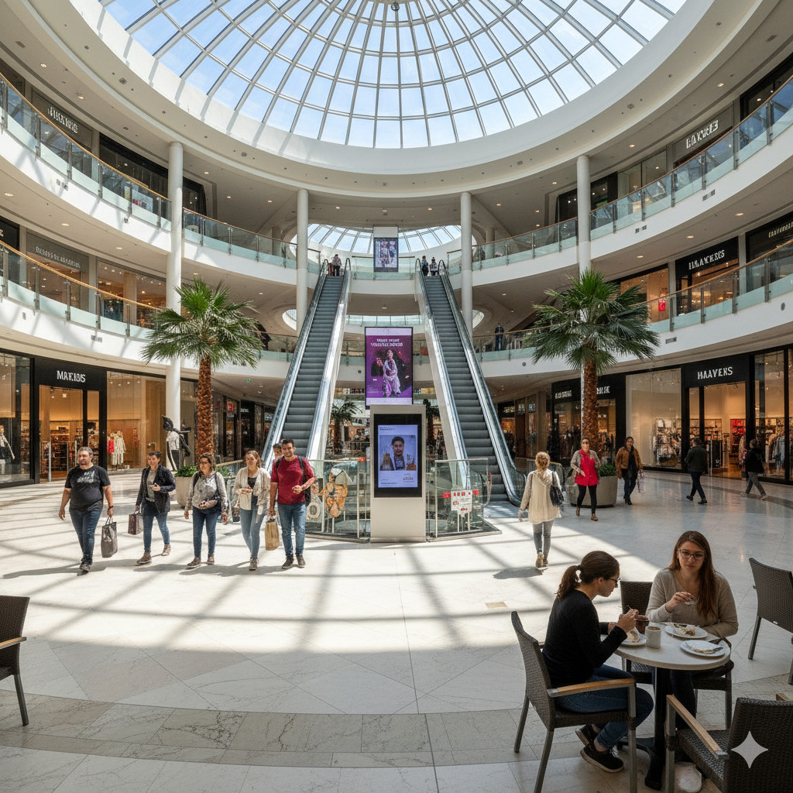
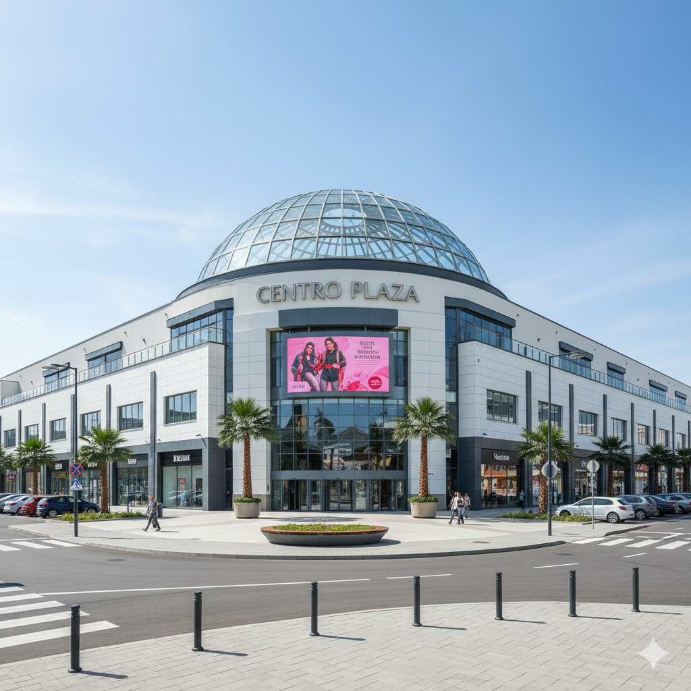
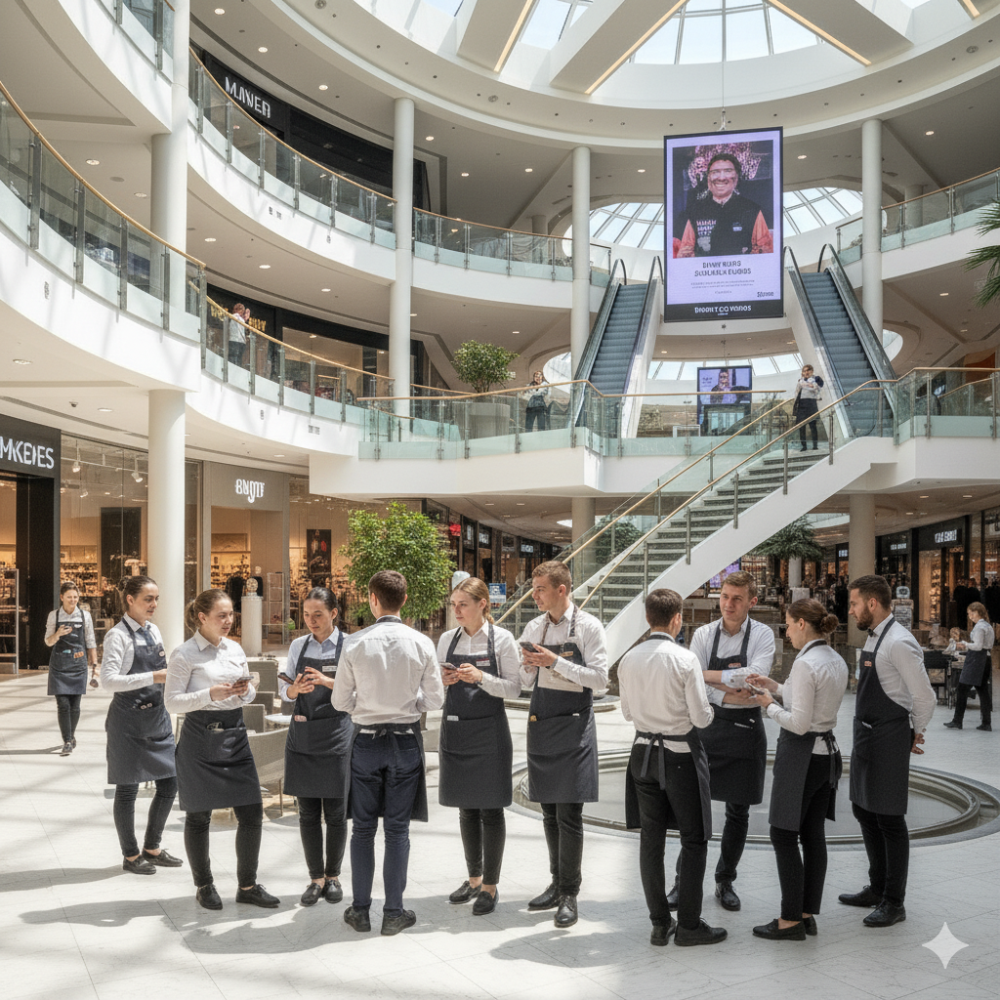

los santos



especificaciones
| altura interior | 74,000 m² |
| tamaño exterior | 80,000 m² | objetivo del personal | Atención al cliente: Brindar un trato amable y profesional, resolviendo dudas y orientando a los visitantes sobre las actividades o servicios disponibles en el recinto. Operación y mantenimiento: Asegurar que las instalaciones (iluminación, sonido, mobiliario, equipos) se encuentren en óptimas condiciones antes, durante y después de cada evento o jornada. Limpieza y presentación: Mantener el recinto limpio, ordenado y presentable en todo momento, cumpliendo con los estándares de higiene del centro comercial. Seguridad: Vigilar el cumplimiento de las normas de seguridad y evacuar adecuadamente en caso de emergencia, coordinándose con el equipo de seguridad general del centro comercial. Comunicación interna: Mantener una comunicación fluida entre los distintos equipos (mantenimiento, limpieza, administración y seguridad) para garantizar la operación eficiente del espacio. Satisfacción del visitante: Recoger sugerencias y reportar incidencias para mejorar continuamente la experiencia del público y de los expositores. |
Descripcion del Centro Comercial “Los santos”
El Centro Comercial Los santos es un espacio moderno, innovador y dinámico, diseñado para ofrecer a los visitantes una experiencia integral de compras, entretenimiento y convivencia. Su infraestructura combina arquitectura contemporánea, tecnología sostenible y servicios de alta calidad, orientados a satisfacer las necesidades de familias, jóvenes y profesionales. Con más de 120 locales comerciales, zona gastronómica, recinto de eventos, áreas verdes, y estacionamiento inteligente, Las Terrazas se ha consolidado como un punto de encuentro social y comercial de la ciudad.
MISION
Brindar una experiencia única de compras, recreación y servicio, fomentando la convivencia en un entorno seguro, limpio y agradable, con personal comprometido con la excelencia y la atención al cliente.
VISION
Ser el centro comercial líder en la región, reconocido por su innovación, sostenibilidad y calidad humana en el servicio.
Descripción del Personal
El personal del centro comercial está conformado por un equipo multidisciplinario, cuidadosamente seleccionado por su actitud de servicio, responsabilidad y capacidad para trabajar en equipo. Cada área tiene funciones claras y complementarias:
1. Administración General
Responsable de la dirección operativa y estratégica. Supervisa las operaciones diarias, la relación con arrendatarios y proveedores, y el cumplimiento de los estándares de calidad. Conducta esperada: liderazgo, toma de decisiones objetiva, trato cordial y comunicación transparente con todo el equipo.2. Personal de Atención al Cliente
Encargados de recibir y orientar a los visitantes, brindar información y resolver incidencias. Conducta esperada: cortesía, empatía, presentación personal impecable, disposición al servicio y actitud proactiva ante los problemas.3. Seguridad
Garantizan la protección de visitantes, trabajadores e instalaciones. Realizan rondas, control de accesos y coordinación ante emergencias. Conducta esperada: vigilancia constante, respeto, discreción y trato amable, evitando confrontaciones y priorizando la prevención.4. Mantenimiento y Servicios Generales
Aseguran el funcionamiento correcto de las instalaciones (electricidad, aire acondicionado, fontanería, iluminación, limpieza de áreas comunes, etc.). Conducta esperada: eficiencia, puntualidad, trabajo silencioso y respeto por el entorno y los usuarios.
5. Limpieza
Responsables de mantener la higiene en todas las áreas, especialmente baños, pasillos, zonas de comida y eventos. Conducta esperada: orden, compromiso, atención a los detalles y actitud respetuosa hacia clientes y compañeros.
6. Operadores Comerciales (arrendatarios)
Son las tiendas, restaurantes y locales que forman parte del centro. Su misión es ofrecer productos y servicios de calidad bajo la normativa y estándares del centro comercial. Conducta esperada: atención profesional al cliente, cumplimiento de horarios, respeto por las normas de convivencia y presentación adecuada de sus espacios.
garantia y envios
manejo de garantias
politica clara de garantia
- Cada tienda del centro comercial debe tener su política visible, pero el centro debe unificar un reglamento general de atención al cliente (por ejemplo: plazos, condiciones de cambio, documentos requeridos).
- Se establece un mínimo obligatorio: por ejemplo, 15 días para cambio directo por defectos evidentes y garantía del fabricante posterior.
Centro de atención de garantías
- Se crea un punto central de servicio al cliente (físico y virtual) donde se registran todos los reclamos.
- Desde ahí se coordina con la tienda correspondiente, se hace seguimiento y se informa al cliente sobre el proceso.
Trazabilidad
- Implemento un sistema digital (CRM o formulario web) para registrar cada garantía con número de caso, fecha, tienda responsable y estado (recibido, en revisión, aprobado, rechazado, entregado).
- Esto evita pérdida de tiempo y genera confianza.
Capacitación del personal
- Entreno al personal de cada tienda en atención empática y manejo de conflictos, para reducir quejas y ofrecer soluciones rápidas.
manejo de envios
Alianzas logísticas
- Firmo convenios con empresas de transporte (Servientrega, Coordinadora, Inter Rapidísimo, etc.) para ofrecer tarifas preferenciales a las tiendas.
- También se puede ofrecer un servicio de envío interno gestionado por el centro comercial.
Plataforma de pedidos
- Creo una plataforma online del centro comercial donde los clientes puedan comprar en varias tiendas a la vez y recibir un solo envío consolidado.
Seguimiento y notificaciones
- Cada envío tiene número de guía y sistema de seguimiento en tiempo real, y se notifica por correo o WhatsApp el estado del pedido (preparado, despachado, entregado).